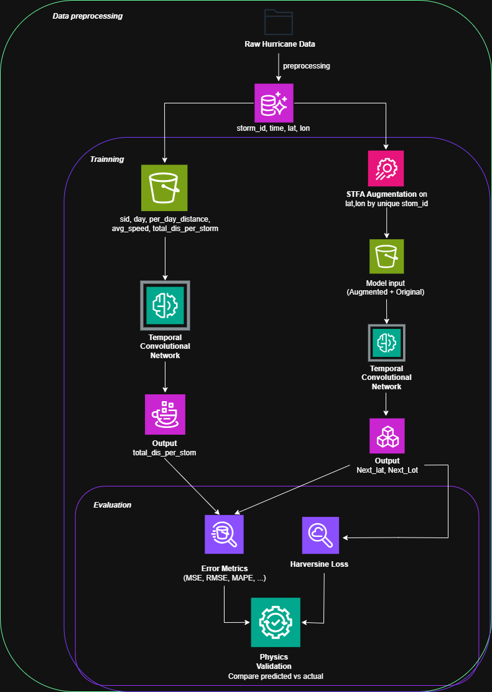
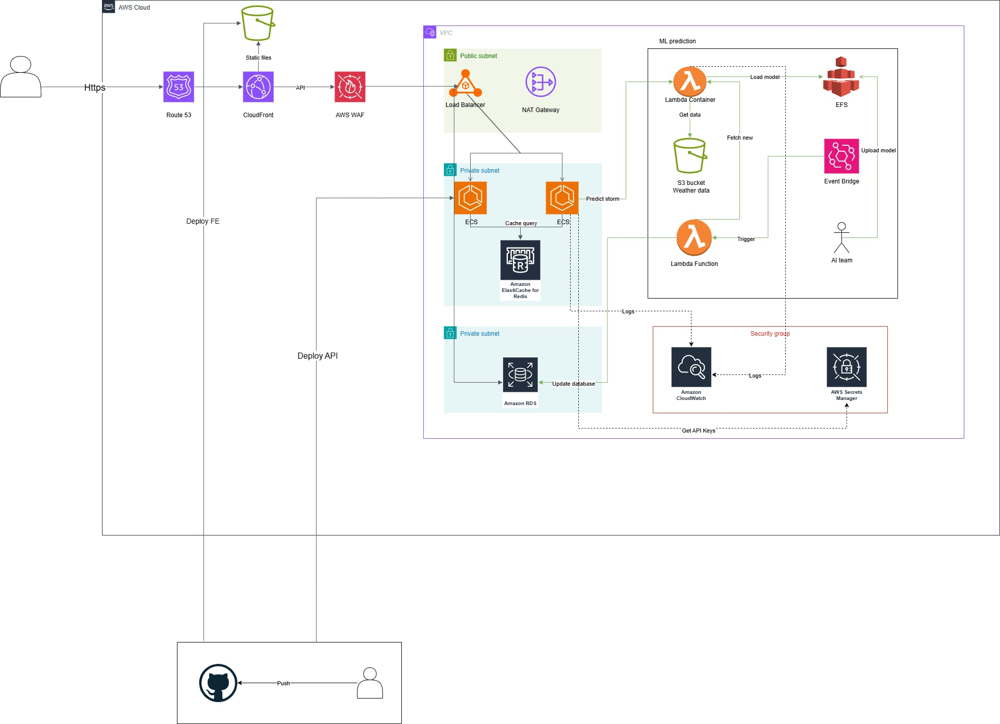

Time-series forecasting underpins many scientific and industrial applications, from meteorology to financial modeling. Despite advances in model architectures, the quality and diversity of training data remain decisive factors for performance. Existing data augmentation techniques—such as random perturbation, slicing, or noise injection—often distort temporal dependencies and fail to represent the natural fading influence of past events. This gap highlights the need for a principled approach that can preserve sequential coherence while capturing the gradual decay of temporal relevance.
This proposal presents a new time-series augmentation framework called Stepwise Temporal Fading Augmentation (STFA). Unlike traditional methods based on random perturbations or noise, STFA models the natural decline in the influence of past observations by applying fading weights to earlier values while preserving recent ones. It generates realistic and diverse synthetic sequences that improve model robustness. The approach will be evaluated on hurricane trajectory prediction, which relies on sequential latitude–longitude data. In addition, Physics-Informed Machine Learning (PIML) principles are incorporated by embedding geographical relationships—such as haversine distance and bearing—into both the feature set and the loss function. This hybrid design combines the flexibility of deep learning with the rigor of physical constraints to enhance prediction accuracy and interpretability.
Accurate time-series forecasting often faces two major challenges: limited data diversity and the lack of physical grounding.
Data scarcity: Many time-series forecasting tasks suffer from limited training data. While there are various augmentation methods, few approaches directly focus on the declining importance of past values over time.
Physics ignorance: Most neural networks only learn from raw data, without considering real-world physical constraints. In trajectory prediction tasks (e.g., hurricanes), this often leads to unrealistic predictions.
We aim to:
STFA generates synthetic time-series sequences by gradually reducing the influence of earlier values. Unlike random noise injection, it systematically applies stepwise fading multipliers across bands of older data.
Let a univariate sequence be:
$$ X = [x_0, x_1, \ldots, x_{T-1}] $$
where $T$ is the sequence length of $X$.
Parameters:
\[ I_b = {, i \mid L - b \cdot k ;\leq; i ;\leq; L - (b-1)\cdot k - 1 ,} \]
Transformation:
We denote the augmented series as:
$$ X = [x_0, \ldots, x_{T-1}] $$
with the transformation rules:
$$ x_t = \begin{cases} x_t, & t \in {T-n, \ldots, T-1}, \\ m_b , x_t, & t \in I_b, \\ m_{S+1} , x_t, & t < \min(I_S), \end{cases} $$
where multipliers $m_b \in (0,1)$ decrease monotonically from recent to older bands.
This formulation preserves the fidelity of recent history while exerting stronger control on the long-range influence of the sequence. The augmentation forces the model to focus on robust patterns beyond the raw data, while increasing diversity according to the chosen parameters.
Neural network models such as RNNs, CNNs, and Transformers do not require explicit formulas or task-specific rules to perform well, provided that they are trained with sufficient data.
For example, in machine translation tasks such as German-to-English translation using an RNN, no explicit grammar rules are provided during training. Nevertheless, the model is capable of producing coherent translations, which demonstrates one of the major strengths of deep learning: the ability to learn complex patterns directly from data.
In contrast, traditional approaches—such as early versions of rule-based translation systems (e.g., Google Translate prior to the 2000s)—relied heavily on grammar rules and dictionaries.
While precise, such systems often lacked flexibility and failed when encountering words with multiple meanings or when handling context-dependent structures.
Inspired by this contrast, our goal is to combine the strengths of deep learning with human-defined formulas in order to achieve better performance.
Specifically, in our hurricane movement prediction model where we implement Stepwise Temporal Fading Augmentation (STFA), we introduce two physics-based formulas into training: the Haversine distance and the bearing.
These provide the model with additional structure and inductive bias, guiding learning beyond purely statistical correlations.
The Haversine formula is widely used to compute the great-circle distance between two points on the surface of a sphere:
$$ \theta = \text{atan2}!\left( \sin(\Delta \lambda)\cos(\varphi_2),, \cos(\varphi_1)\sin(\varphi_2)
Where:
Since the Earth is approximately spherical, the Haversine formula provides an accurate approximation, with less than 1% error in most cases.
In our framework, instead of relying solely on standard loss functions such as MSE, RMSE, or MAPE, we propose using the Haversine distance as the primary loss function.
Because the model outputs latitude and longitude coordinates for the next hurricane location, the Haversine formula directly measures the distance between predicted and ground-truth points.
A distance close to zero indicates a highly accurate prediction, while a large distance signals a significant error.
This distance-based loss can also be combined with common training mechanisms such as learning rate schedulers and early stopping to fully exploit its potential.
The bearing formula gives the direction from one geographic point to another along the great circle path:
$$ \theta = \text{atan2}!\left( \sin(\Delta \lambda)\cos(\varphi_2),, \cos(\varphi_1)\sin(\varphi_2)
Where:
In our implementation, we use both the Haversine distance and bearing to compute two additional features — “distance” and “bearing” — which are appended to the dataset.
These features provide the model with richer information about hurricane trajectories while maintaining the core objective of predicting the next geographic location.
Performance Boost: STFA generates structured synthetic sequences that enhance model robustness, reduce overfitting, and improve generalization on unseen storm trajectories.
Physics Awareness: Incorporating geographical principles such as distance and bearing increases interpretability and ensures physically consistent predictions.
New Research Direction: Establishes a novel paradigm for time-series augmentation based on temporal relevance fading, expanding the methodological toolkit for sequence learning.
Scalability and Reusability: The combined STFA + PIML framework can be extended to other sequential forecasting domains such as energy demand, traffic flow, and financial trends.
Overall Impact: By improving predictive stability and interpretability while maintaining scalability, the proposed approach delivers both scientific value and practical return on computational investment.
The platform integrates a hurricane trajectory prediction pipeline with a scalable AWS deployment. Raw storm data is preprocessed into sequential datasets and processed through two phases: Phase 1 learns spatio-temporal features, while Phase 2 uses an STFA-weighted Transformer for trajectory forecasting. Results are merged in the Trajectory Synthesizer and evaluated through quantitative metrics and visualization. The system runs on a serverless AWS stack using ECS, Lambda, and S3 for processing and storage, with CloudFront and Route 53 delivering a secure, scalable prediction dashboard.


Database:RDS PostgreSQL storage:
Data Lake: S3 buckets lưu:
Lambda Container:(Python + TensorFlow):
Workflow:
EventBridge Scheduler:Trigger Lambda each 1 hour
Lambda Data Collector:
AI Team Integration:
CloudWatch:
Secrets Manager: save:
WAF Rules::
Total: $5. 25/month
Total $93.00/Month
Total $7.33/Month
Total $15.10/Month
Total $34.75/Month
Total $155.43/month